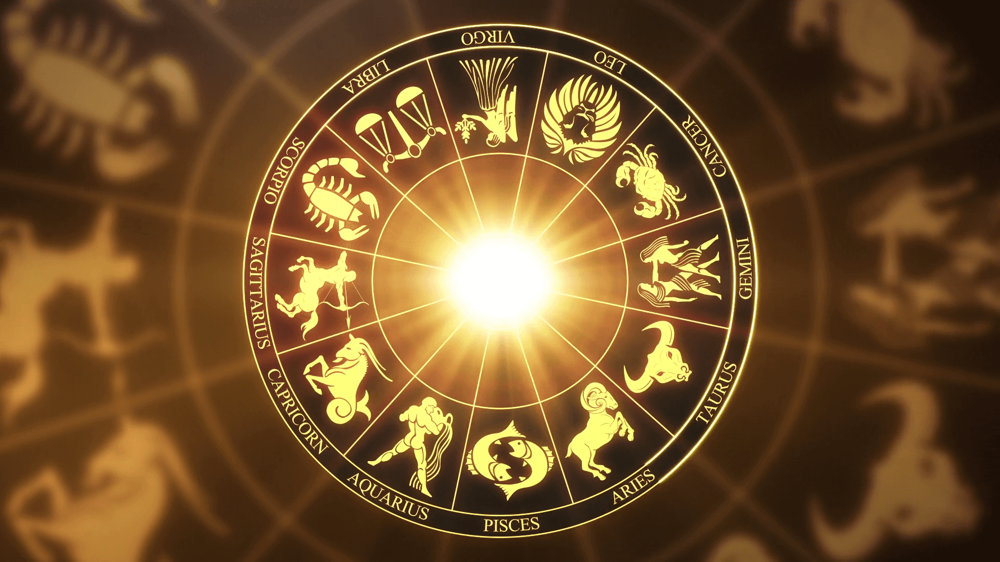

Welcome to AstroLogical Sid
Astrology is a type of shastram/script written and implemented by Indian Maharshees (Monks) Shree. Jaimini Maharshee and Shree Parasharam Maharshee in scientific way [Astrological science]. This is mainly developed to define the effect of terrestrial event and position of celestial objects.
AstroLogicalSid is our 15 years dream to share our views and give service on traditional Astrology to the whole world by not wasting time to meet us physically in our offices. Moreover It is not convenient for our devotees who are outside city/countries. To resolve this problem we came up with this virtual meeting and phonically connect to get all facilities which we offer.

Our Services

Kundali Matching
Comprehensive compatibility analysis for prospective couples based on traditional Vedic astrology.
Learn More
Panchanga
Detailed analysis of the five elements of the Hindu calendar for auspicious timing and predictions.
Learn More
Mangal Dosha
Analysis and remedies for the astrological condition related to the planet Mars in your birth chart.
Learn More
Nakshatra Koota
Detailed analysis of lunar constellations for compatibility and life path predictions.
Learn MoreAbout Sid
Siddharth, widely recognized for his myth-free and prediction-oriented approach to astrology, is also an Accountant and Auditor based in Australia.
With over a decade of experience studying celestial patterns, Sid combines traditional astrological wisdom with a modern, practical approach to help clients navigate life's challenges.
Read My Story
Discuss With Us
Dwadasha
My Life
Transgenic: Luxurious Life, Secret delectation, Nirvana, Unmake, Wickedness sin, Hell and Hospital
Lagna
I am (myself)
Body, Soul: Nature, Mind, Charm, Personality, Healthiness, Luck and Purva punya
Dwiteeya
My Family
Family: Treasure, Money, Vocable, Eyes, Lethal and Primary education
Triteeya
My Brother-Sister
Brother: Courage, Ear, Anger, Arrogance, Idea(Plan), Nearby travel and Friend
Ready to Discover What the Stars Have in Store for You?
Book your personalized astrological reading today and gain clarity on your life's path.
Book Now